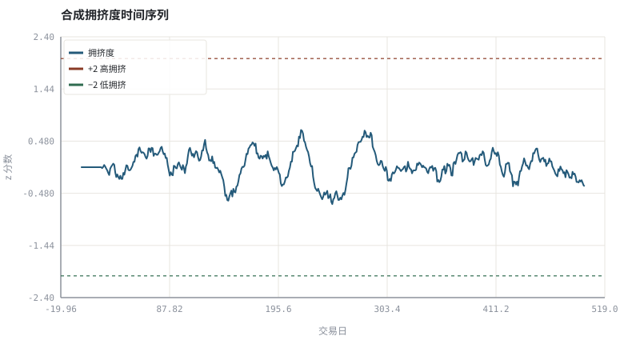
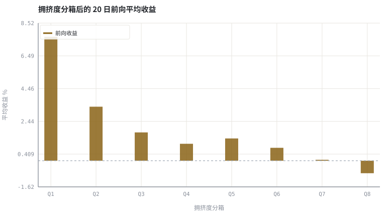

第 23 章资金流、情绪与拥挤交易
当很多人用同一套信号时，因子暴露会变成流动性风险。
本章位置：第 21～22 章分别处理因子与个体偏差，本章处理它们的叠加；第 24 章 · 怎样读一篇因子论文：从摘要到可复现 给出阅读这类实证论文的标准清单。
拥挤度是「同一段代码被多少个进程同时执行」的指标。单进程时退出无成本，所有进程同时退出时，锁竞争把吞吐打没了。
- 能定义资金流、拥挤度与情绪代理变量。
- 能计算拥挤度分组后的前向收益并做对照。
- 能解释「好策略被挤坏」的机制：同步性、冲击与反转。
- 能说明另类数据的口径与可复现性问题。
§知识点地图
每个知识点都配了 1～2 个扩展学习链接；本章完整资源清单见 扩展学习。
| # | 知识点 | 扩展学习 | 状态 |
|---|---|---|---|
| 1 | 资金流与净申购 | Herd behavior · Market microstructure | 正文已覆盖 |
| 2 | 换手率与拥挤度 | Herd behavior · Market microstructure | 正文已覆盖 |
| 3 | 情绪代理变量 | Herd behavior · Market microstructure | 正文已覆盖 |
| 4 | 分箱与前向收益 | Rate of return · Logarithmic return | 正文已覆盖 |
| 5 | 同步性与相关性上升 | Diversification (finance) · Modern portfolio theory | 正文已覆盖 |
| 6 | 反转效应 | Herd behavior · Market microstructure | 正文已覆盖 |
| 7 | 另类数据 | Herd behavior · Market microstructure | 正文已覆盖 |
| 8 | 容量与衰减 | Herd behavior · Market microstructure | 正文已覆盖 |
§23.1资金流是有口径的量
「主力资金流入」在不同终端可能有完全不同的定义：按成交单笔金额分档、按主动买卖方向、或按基金净申购。三者不是同一个量，且都不对应真实的钱进入市场——每一笔买必有对应的卖。使用前必须写下：数据源、聚合窗口、方向判定规则、是否含 ETF 申赎。
| 代理变量 | 可得性 | 主要偏差 |
|---|---|---|
| 基金净申购 / 份额变化 | 低（定期披露） | 滞后、无法区分申赎动机 |
| 大单净额 | 高（逐笔） | 拆单、冰山单、主动方向标记口径 |
| 换手率 / 成交额分位 | 高 | 同时受波动与指数调样影响 |
| 搜索量 / 舆情 | 中 | 样本选择、平台用户偏差、不可复现 |
§23.2拥挤如何把收益变成风险
拥挤度高 → 持仓重叠 ↑ → 同时减仓时相关性 ↑ → 冲击成本 ↑ → 反转概率 ↑
一个因子在少数人使用时是溢价，在所有人使用时就变成共同的退出通道。第 21 章的因子暴露是横截面的，这一章补上时间维度：暴露的密度。这也是为什么策略评估必须报告容量与换手，而不只报夏普。
§23.3检验方式：分箱 + 前向收益
把拥挤度按分位分成若干箱，比较各箱未来 N 日平均收益，是无模型、易复核的第一步。注意三点：分箱阈值必须用历史可得数据；收益要扣除成本；分组结果本身也是一次参数选择，需在样本外重复。
§Python 分析实例
实验 23-1 · 拥挤度分箱与前向收益
#!/usr/bin/env python3
# -*- coding: utf-8 -*-
"""合成「追涨资金流 → 拥挤 → 后续收益受压」的数据生成过程，并做分箱对照。
数据为合成数据或模型示意，仅用于教学，不构成投资建议。
"""
from __future__ import annotations
import math
import pathlib
import random
import statistics
import sys
sys.path.insert(0, str(pathlib.Path(__file__).resolve().parents[3] / "tools"))
from chart import Chart, candlestick, heatmap, BLUE, RED, GREEN, AMBER
FIG = pathlib.Path(__file__).resolve().parents[1] / "fig"
FIG.mkdir(exist_ok=True)
random.seed(7)
# ---- 参数区 ----
N, FWD, BINS = 500, 20, 8
W = 20 # 拥挤度滚动窗口
GAMMA = 0.0009 # 拥挤对未来收益的压制系数
NOISE = 0.009 # 收益噪声
# ---- 计算与作图 ----
rng = random.Random(7)
rets, flow, crowd = [], [], []
for i in range(N):
if i >= W:
recent = flow[i - W:i]
m = statistics.fmean(flow[:i])
s = statistics.pstdev(flow[:i]) or 1.0
c = (statistics.fmean(recent) - m) / s
else:
c = 0.0
crowd.append(c)
r = 0.0003 - GAMMA * c + rng.gauss(0, NOISE)
rets.append(r)
chase = 0.7 * (statistics.fmean(rets[-5:]) / NOISE) if rets else 0.0
flow.append(chase + rng.gauss(0, 0.8))
prices, v = [], 1.0
for r in rets:
v *= (1 + r)
prices.append(v)
fwd = [prices[i + FWD] / prices[i] - 1 if i + FWD < N else None
for i in range(N)]
lo, hi = min(crowd), max(crowd)
width = (hi - lo) / BINS
bucket = [[] for _ in range(BINS)]
for c, f in zip(crowd, fwd):
if f is None:
continue
k = min(BINS - 1, int((c - lo) / width))
bucket[k].append(f)
means = [statistics.fmean(b) if b else 0.0 for b in bucket]
counts = [len(b) for b in bucket]
c = Chart(FIG / "23-crowding.svg", "合成拥挤度时间序列", xlabel="交易日", ylabel="z 分数")
c.line(range(N), crowd, BLUE, label="拥挤度")
c.hline(2.0, RED, label="+2 高拥挤")
c.hline(-2.0, GREEN, label="−2 低拥挤")
print("拥挤图:", c.save())
b = Chart(FIG / "23-bins.svg", "拥挤度分箱后的 20 日前向平均收益", xlabel="拥挤度分箱", ylabel="平均收益 %",
xticks=[(i, "Q%d" % (i + 1)) for i in range(BINS)])
b.bars(range(BINS), [100 * x for x in means], AMBER, label="前向收益")
b.hline(0.0, "#9aa6b2")
print("分箱图:", b.save())
valid = [(c, f) for c, f in zip(crowd, fwd) if f is not None]
mc = statistics.fmean(x for x, _y in valid); mf = statistics.fmean(y for _x, y in valid)
corr = sum((x - mc) * (y - mf) for x, y in valid) / math.sqrt(
sum((x - mc) ** 2 for x, _y in valid) * sum((y - mf) ** 2 for _x, y in valid))
print("最低拥挤箱=%.3f%% 最高拥挤箱=%.3f%% 差=%+.3f%% | 相关系数=%.3f | 各箱样本 %s" %
(100 * means[0], 100 * means[-1], 100 * (means[-1] - means[0]), corr, counts))操作：把 GAMMA 设为 0（拥挤不影响未来收益），观察最高/最低箱之差是否只剩噪声。 预期与判读：在数据生成过程里人为注入「拥挤压制未来收益」后，高拥挤箱的平均前向收益明显更低、相关系数为负。这是演示检验方法：真实数据是否如此，需要独立样本与成本扣除。
改参数看趋势：把 BINS 改成 4 或 16，观察分箱数怎样影响极值箱的噪声与样本量。 文件位置：part4/23-flow-crowding/code/23-crowding.py


代码块右上角可一键复制；仓库里的 code/*.py 由 tools/extract_code.py 从这些代码块自动抽取。脚本只用标准库、固定 random.seed(7)，运行后写出 fig/*.svg；批量运行用 ./tools/run_python.sh。
§本章参考资料
按本章知识点挑选的精读资料；更多检索入口见 扩展学习。
Momentum investing
百科 · 参考资料横截面动量与反转效应
怎么用：横截面动量与反转https://en.wikipedia.org/wiki/Momentum_(finance)
Volume (finance)
百科 · 参考资料成交量与换手率的信息含量
怎么用：成交量与换手率的信息含量https://en.wikipedia.org/wiki/Volume_(finance)
Market microstructure
百科 · 参考资料价格形成、冲击成本与做市机制
怎么用：拥挤平仓时的冲击成本机制https://en.wikipedia.org/wiki/Market_microstructure
§常见误区
- 把「大单净流入」当成真实的资金进入。
- 分箱阈值用全样本分位数，引入未来函数。
- 只报最高/最低箱的差，不报中间箱与样本量。
- 忽略拥挤策略的容量与换手成本。
§习题与思考
- 说明为什么「每一笔买必有一笔卖」使净流入指标只能是代理变量。
- 在示例里加入 0.1% 的换仓成本，观察高低箱收益差是否还显著。
- 设计一个只用历史信息计算分箱阈值的版本。
§扩展学习
以下资料按本章知识点挑选，可直接精读或对照真实数据；知识点地图里每一条也挂了 1～2 个直达链接。
- Herd behavior（百科）：拥挤交易与反馈环
Herd behavior - Market microstructure（百科）：价格形成、冲击成本与做市机制
Market microstructure - Volume (finance)（百科）：成交量与换手率的信息含量
Volume (finance) - Momentum investing（百科）：横截面动量与反转效应
Momentum investing - NBER（机构）：资产定价与实证金融工作论文
NBER
继续扩展：在 Google Scholar 检索本章相关论文 · 在 MIT OCW 检索配套课程 · 在 arXiv 检索预印本 · 全书参考资源总表 · 附录 A 速查与链接总表
§延伸阅读与内链
- 第 24 章 · 怎样读一篇因子论文：从摘要到可复现 论文复现；第 28 章 · 过拟合、多重检验与滚动样本外 多重检验；第 29 章 · 订单执行、滑点与市场冲击 冲击成本。